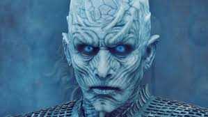

Mechanics
Rules

The night is dark and full of terrors
The only rule in this game is to survive. Because the wars of the South and the army of the dead from the North wants you dead. You stand a chance only in numbers and unity and with Dragon Glass and Valyrian Steel Blade. Characters battle to claim the Iron Throne, a seat for the King/Queen of the Seven Kingdoms, the regime that rules all but the northern tip of Westeros. Every character has different story and they faced different challenges. The main rules are to follow the story in the seasons and not to deviate from the path or it will be the player's downfall.
Game of Winter basically tells and shows the lives of different characters in Game of Thrones and depicts the challenges that they faced as game levels. The player selects the character, from the menu, he wants to play as. the game starts from the beggining of the character's life in the show. A story line with levels based on challenges each time harder than the one before according to the GOT Series.
In this version of the game, we will be taking things slow and only integrate 2 main characters and their lives from the series. Daenerys Targaryen and Jon Snow. The players will play to their death (in Dany's case) or banishment (in John's case) as in the series.
"When you play the game of thrones, you win or you die. There is no middle ground."
Combat

Whenever a player marches one or more of his units into an area containing units from another House, combat ensues. Combat is resolved by comparing the total Combat Strength of the battling sides. The victor is the player who gathers the highest Combat Strength. The following elements can contribute to Combat Strength:
- 1. Units in the combat
- 2. supporting units
- 3. Defense Order (defender only)
- 4. March Order (attacker only)
- 5. The Valyrian Steel Blade or an heirloom sword
- 6. Respectable House
- 7. Garrison (defender only)
The player resolving the March Order is considered the attacker (and his units are attacking) while the opponent occupying the contested area is the defender (and his units are defending). Any supporting units (via a Support Order from an adjacent area) are considered supporting (i.e., they are not considered attacking or defending).
Combat is resolved by performing the following steps:
- 1. Call for Support
- 2. Calculate Initial Combat Strength
- 3. Choose and Reveal House Cards
- 4. Use Valyrian Steel Blade
- 5. Calculate Final Combat Strength
- 6. Combat Resolution
Physics

Game of Thrones is set in the medieval times in a world of fantasy and magic, the show contains war, dragons, witches, politics as a wide universe of characters plot to take the throne for the king. The physics for fantasy creatures like Dragons and Wight Walkers i.e. the army of the dead has to be somewhat according to the real world to put in a realistic approach to the game.
The physical elements such as RigidBodies, Frictions, Bounciness, Flight, Sliding, rotation, etc are all supposed to be integrated in the game to make it look more realistic and natural even with the fantasy elements.
Menu